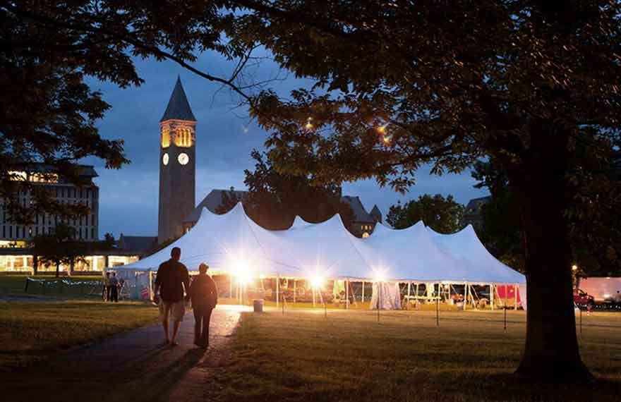

Upcoming Events
From dancing in the streets to a three-month-long colloquium series, enjoy the wide variety of Arts and Sciences events celebrating the sesquicentennial.


From dancing in the streets to a three-month-long colloquium series, enjoy the wide variety of Arts and Sciences events celebrating the sesquicentennial.